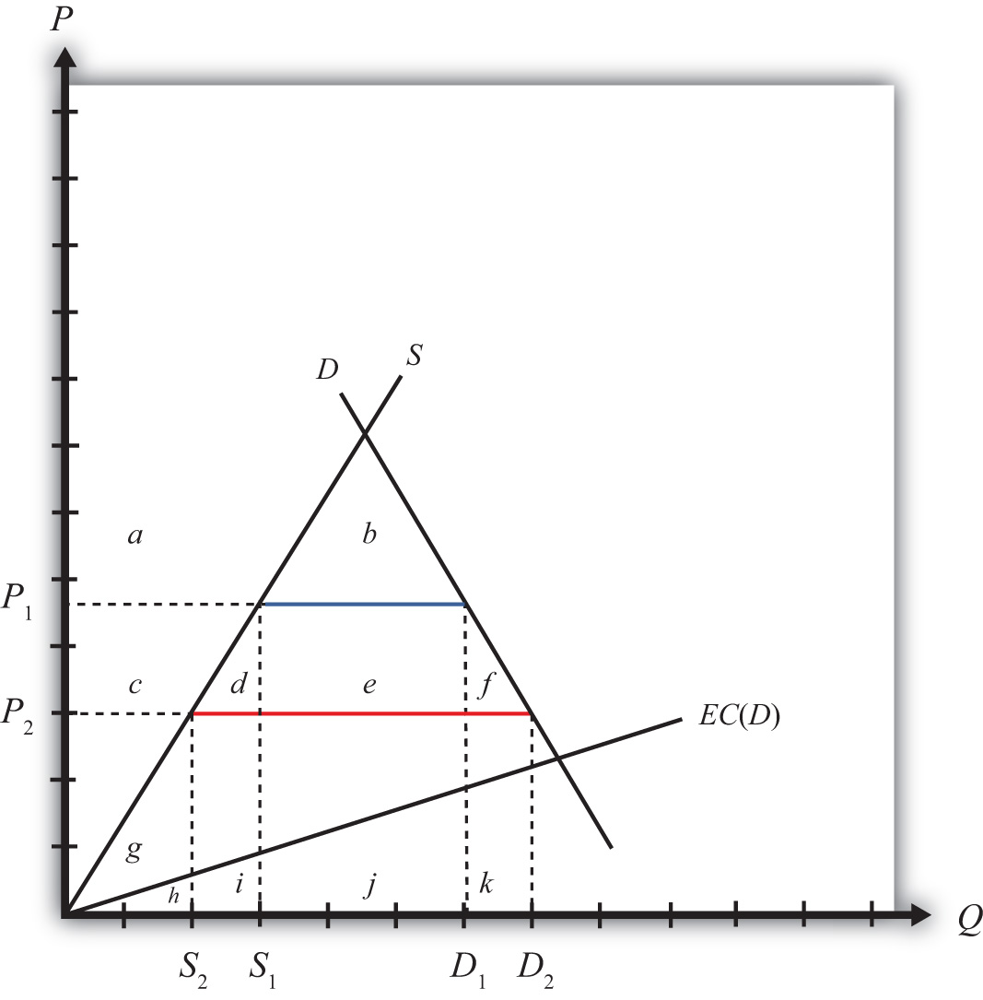
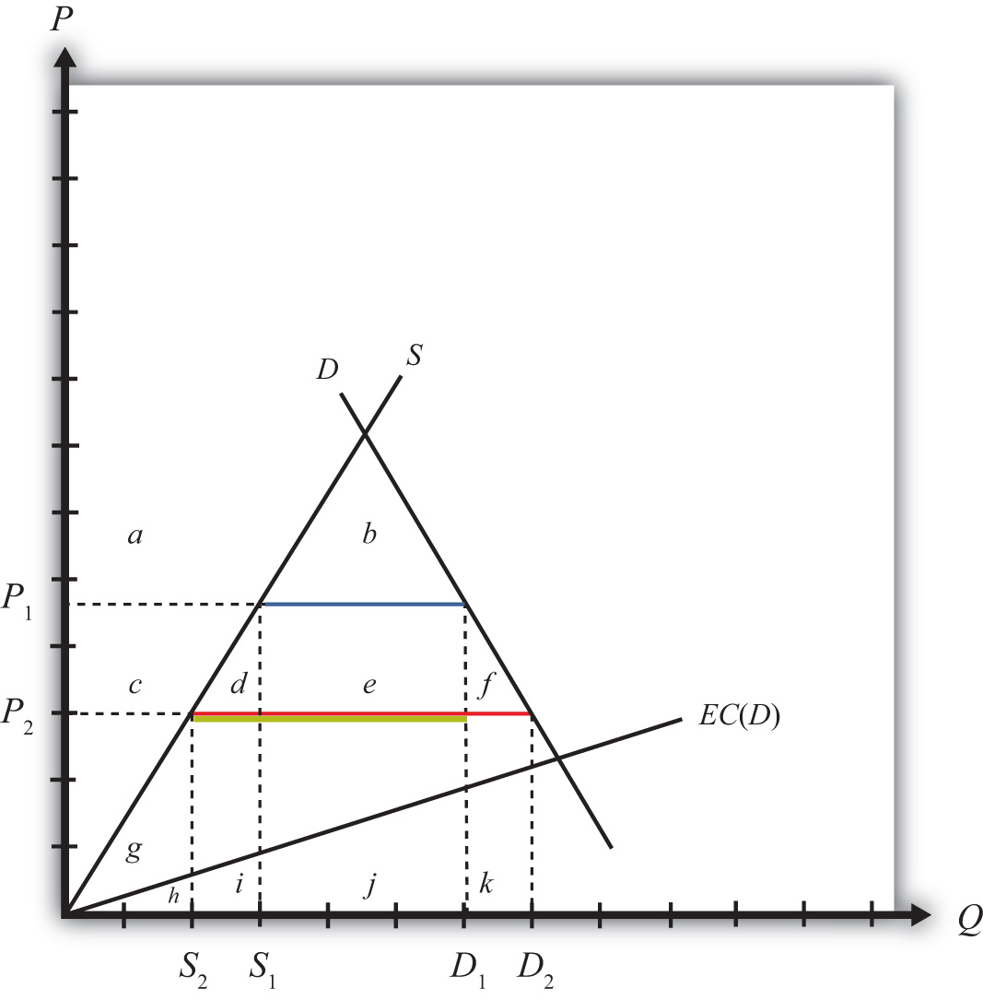

One contentious issue in international trade policy discussions concerns the connection between international trade and the environment. Many environmental groups claim that freer trade, as implemented through the World Trade Organization (WTO) agreements or in free trade agreements such as the North American Free Trade Agreement (NAFTA), results in negative environmental outcomes. For example, the Sierra Club argues, “Economic globalization ties the world together as never before. But it also poses serious new threats to our health and the environment. Trade agreements promote international commerce by limiting governments’ ability to act in the public interest. Already food safety, wildlife and pollution control laws have been challenged and weakened under trade rules as illegal ‘barriers to trade.’”Sierra Club, “A Fair Trade Bill of Rights,” Responsible Trade, http://www.sierraclub.org/trade/ftaa/rights.asp.
In contrast, the WTO, a frequent target for criticism by environmental groups, points to the WTO agreement, which states, “[WTO member] relations in the field of trade and economic endeavor should be conducted with a view to raising standards of living…while allowing for the optimal use of the world’s resources in accordance with the objective of sustainable development, seeking both to protect and preserve the environment and to enhance the means for doing so in a manner consistent with their respective needs and concerns at different levels of economic development.”World Trade Organization, “Environment Issues: Sustainable development,” http://www.wto.org/english/tratop_e/envir_e/sust_dev_e.htm.
Arguably, the stated goals of free trade–oriented groups and environmental groups are very similar, at least as highlighted in the documents produced by both sides. What differ are the methods used to achieve the objectives. For reasons to be elucidated below, the WTO has argued that environmental concerns are not directly within the purview of the WTO agreement, but despite that, environmental policies and international environmental agreements are neither prohibited by nor inconsistent with the WTO accords. In essence, the argument by some has been that the WTO agreement, and free trade agreements more generally, is intended to be about trade and is not intended to solve tangential problems related to the environment. On the other hand, environmental groups have pointed out that sometimes WTO and free trade agreement decisions have a negative effect on environmental outcomes, and thus these agreements should be revised to account for these negative effects.
Below we will consider these issues with respect to one type of environmental concern: pollution caused by consumption of an imported good. Although we will not consider many of the other contested environmental and trade issues, this one example will suffice to establish some important and generalizable conclusions.
Consider a small country importing gasoline with a tariff in place initially such that the domestic tariff-inclusive price is P1. At this price, domestic supply is S1, domestic demand (or consumption) is D1, and the level of imports is (D1 − S1), shown in Figure 9.8 "Trade and Environmental Costs".
Figure 9.8 Trade and Environmental Costs
Suppose that domestic consumption of gasoline causes air pollution. This means that consumption has a negative external effect on all users of air—that is, there is a negative consumption externality.
Let’s assume that the cost to society (in dollar terms) of the air pollution is an increasing function of domestic consumption. In other words, the greater the consumption of gasoline, the greater is the pollution, and the greater is the subsequent harm caused to people in the country. For simplicity, assume the environmental cost, EC(D), is a linear function of total domestic demand, D. The height of EC at any level of demand represents the additional dollar cost of an additional gallon of gasoline consumption. This implies the total environmental cost of a consumption level—say, D2—is the area under the EC curve between the origin and D2.
With the initial tariff in place, domestic demand is D1, which implies that the total societal cost of pollution is given by the area (h + i + j). Note that despite the cost of pollution, it does make sense to produce and consume this good if the objective is national welfare. Consumer surplus is given by the area (a + b) and producer surplus is (c + g). The sum of these two clearly exceeds the social cost of pollution, (h + i + j). (Note that these statements are true for Figure 9.8 "Trade and Environmental Costs" in particular; they are not true in general. By drawing the EC curve very steeply, corresponding to a much higher cost of pollution, it might not make sense to produce and consume the good in the market equilibrium.)
Next, suppose that the country agrees to remove the tariff on imported gasoline after signing a trade liberalization agreement. The question we ask is, Can trade liberalization have such a negative effect on the environment that it makes a country worse off? The answer, as we’ll see, is yes.
Suppose the tariff is removed and the price of gasoline falls to P2. The lower price causes a reduction in production to S2, an increase in consumption to D2, and an increase in imports from the blue line segment (D1 − S1) to the red line segment (D2 − S2). Since domestic consumption of gasoline rises, there is also an increase in pollution.
The welfare effects of the tariff elimination are summarized in Table 9.13 "Welfare Effects of a Tariff Elimination with a Negative Environmental Consumption Externality". The letters refer to the area in Figure 9.8 "Trade and Environmental Costs".
Table 9.13 Welfare Effects of a Tariff Elimination with a Negative Environmental Consumption Externality
| Importing Country | |
|---|---|
| Consumer Surplus | + (c + d + e + f) |
| Producer Surplus | − c |
| Govt. Revenue | − e |
| Pollution Effect | − k |
| National Welfare | (d + f) − k |
Consumers of gasoline benefit by the areas (c + d + e + f) from the lower free trade price. Domestic producers lose (c) with a reduction in producer surplus. The government also loses tariff revenue (e). The net total efficiency gains from trade are given by the areas (d + f). However, the presence of the environmental consumption externality means there is an additional cost (k) caused by the pollution from higher domestic consumption of gasoline.
The national welfare effect of the tariff elimination is given by (d + f − k). For a particular level of efficiency gains, the total national effect will depend on the size of the pollution cost. In the graph, the curves are drawn such that area k is slightly larger than d + f. Thus trade liberalization can cause a reduction in national welfare. The cost of additional pollution may be greater than the efficiency improvements from free trade. However, if the environmental cost of consumption were lower, the EC(D) line would be flatter and area k would become smaller. Thus for lower environmental costs, trade liberalization might raise national welfare. The net effect, positive or negative, will depend on the magnitude of the pollution costs relative to the efficiency benefits.
In general, the theory of the second best suggests that, in the presence of a market imperfection or distortion, a properly chosen trade policy might be found that will raise a small country’s national welfare. However, for most imperfections, a trade policy will be a second-best policy. A better policy, a first-best policy, will always be that policy that attacks the imperfection or distortion most directly. In most instances, the first-best policy will be a domestic policy rather than a trade policy.
In this case, environmental pollution caused by the consumption of gasoline is a market imperfection because gasoline consumption has a negative external effect (via pollution) on others within the society. Economists call this a negative consumption externality. This problem can be corrected with any policy that reduces the negative effect at a cost that is less than the benefit. A tariff on imports is one such policy that could work. However, the most direct policy option, hence the first-best policy choice, is a consumption tax. Below we’ll show the welfare effects of a tariff and a domestic consumption tax and compare the results to demonstrate why a consumption tax is first best while a tariff is second best.
First, let’s consider the effects of a tariff when consumption of the import good causes pollution. Consider a small country importing gasoline at the free trade price given by P2 in Figure 9.9 "Tariff Effects and Environmental Costs". (Note that this is Figure 9.8 "Trade and Environmental Costs" redrawn.) Demand is given by D2, supply by S2, and imports are (D2 − S2) (the red line). Suppose that domestic consumption of gasoline causes air pollution. Assume the environmental cost of pollution in dollar terms, EC(D), is a linear function of total domestic demand, D.
Figure 9.9 Tariff Effects and Environmental Costs
Next, suppose a specific tariff, t = P1 − P2, is imposed, thereby raising the domestic price to P1. Domestic demand for gasoline falls to D1, supply rises to S1, and imports fall to (D1 − S1) (the blue line). The welfare effects of the tariff are presented in Table 9.14 "Welfare Effects of a Tariff with a Negative Environmental Consumption Externality". The letters refer to the areas in Figure 9.9 "Tariff Effects and Environmental Costs".
Table 9.14 Welfare Effects of a Tariff with a Negative Environmental Consumption Externality
| Importing Country | |
|---|---|
| Consumer Surplus | − (c + d + e + f) |
| Producer Surplus | + c |
| Govt. Revenue | + e |
| Pollution Effect | + k |
| National Welfare | k − (d + f) |
Consumers of gasoline lose surplus (c + d + e + f) from the higher domestic price. Domestic producers gain (+c) with an increase in producer surplus. The government also collects tariff revenue (+e). The net total efficiency losses from trade are given by the areas (d + f). However, the presence of the environmental consumption externality means there is an additional benefit caused by the reduced pollution. This benefit is represented by the area k.
The net national welfare effect of the tariff is given by (k − d − f). Since the curves are drawn such that area k is slightly larger than d + f, a tariff results in an improvement in national welfare in this example. More generally, we can only say that a tariff may result in an increase in national welfare since it will depend on the shapes of the curves and the size of the tariff.
Next, suppose that a consumption tax, t = P1 − P2, is imposed instead of a tariff. Refer to Figure 9.9 "Tariff Effects and Environmental Costs". The tax will raise the consumer’s price to P1 but will leave the producer’s price at P2. Domestic producers will not be affected by the consumption tax since continued competition in free trade with firms in the rest of the world will maintain their profit-maximizing price at the world price of P2. The price changes will cause domestic demand for gasoline to fall to D1, but supply will remain at S2. Imports will fall to (D1 − S2) (the yellow line). The welfare effects of the consumption tax are presented in Table 9.15 "Welfare Effects of a Domestic Consumption Tax with a Negative Environmental Consumption Externality". The letters refer to the area in Figure 9.9 "Tariff Effects and Environmental Costs".
Table 9.15 Welfare Effects of a Domestic Consumption Tax with a Negative Environmental Consumption Externality
| Importing Country | |
|---|---|
| Consumer Surplus | − (c + d + e + f) |
| Producer Surplus | 0 |
| Govt. Revenue | + c + d + e |
| Pollution Effect | + k |
| National Welfare | k − f |
Consumers of gasoline lose from the higher price by the area (c + d + e + f). Domestic producers are unaffected because their price does not change. The government also collects tax revenue, given by (c + d + e), which is the product of the consumption tax (t = P1 − P2) and the level of consumption (D1). The net total efficiency losses from trade are given by the area (f). However, the presence of the environmental consumption externality means there is an additional benefit caused by the reduced pollution. This benefit is represented by the area k.
The net national welfare effect of the tariff is given by the summation of all effects, (k − f). Since the curves are drawn such that the area k is larger than f, a consumption tax results in an improvement in national welfare in this example. More generally, we can only say that a consumption tax may result in an increase in national welfare since it will depend on the shapes of the curves and the size of the tax.
More interesting is the comparison between the welfare effects of a tariff and those of a consumption tax. Since the two policies are set at identical levels, it is easy to compare the effects. The distributional effects—that is, who wins and who loses—are slightly different in the two cases. First, the effects on consumers are the same since both policies raise the price to the same level. However, domestic producers suffer a loss in producer surplus with a tariff, whereas they are unaffected by the consumption tax. To some, this may look like a bad effect since domestic production of the polluting good is not reduced with the consumption tax. However, it is the net effect that matters. Next, the government collects more revenue with the domestic tax than with the tariff since both taxes are set at the same rate and consumption is greater than imports. Finally, the environmental effect is the same for both since consumption is reduced to the same level.
The net welfare effect of the consumption tax (NWC = k − f) clearly must exceed the net welfare effect of a tariff (NWT = k − d − f)—that is, NWC > NWT. The reason is that the tariff incurs two separate costs on society to receive the environmental benefit, whereas the consumption tax incurs only one cost for the same benefit. Specifically, the tariff causes a loss in both consumption and production efficiency (d and f), while the consumption tax only causes a consumption efficiency loss (f). For this reason, we say it is more efficient (i.e., less costly) to use a domestic consumption tax to correct for a negative consumption externality such as pollution than to use a trade policy, even though the trade policy may improve national welfare.
For many environmental advocates, trade liberalization, or globalization more generally, clearly has the potential to cause environmental damage to many ecosystems. Concerns include pollution from industrial production, pollution from consumption, clear-cutting of tropical forests, extinction of plant and animal species, and global warming, among others. Although only one type of environmental problem is addressed above, the principles of the theory of the second best will generally apply to all these concerns.
The analysis above accepts the possibility that consumption causes pollution and that pollution is bad for society. The model shows that under these assumptions, a trade policy can potentially be used to improve environmental outcomes and can even be in society’s overall interest. However, a trade policy is not the most efficient means to achieve the end. Instead, resources will be better allocated if a domestic policy, such as a consumption tax, is used instead. Since the domestic policy attacks the distortion most directly, it minimizes the economic cost. For this reason, a properly chosen consumption tax will always do better than any tariff.
With respect to other types of environmental problems, a similar conclusion can be reached. The best way to correct for most pollution and other environmental problems will be to use a domestic policy intervention such as a production tax, consumption tax, factor-use tax, or another type of domestic regulation. Trade policies, although potentially beneficial, are not the most efficient policy instruments to use.
It is worth emphasizing that the goal of most economic analysis should in many instances be aligned with the goal of environmentalists. It is the extraction and use of natural resources that contributes to environmental damage. At the same time, it is the extraction and use of natural resources that is necessary to produce the goods and services needed to raise human standards of living to acceptable levels. Thus, if we minimize the use of resources to produce a particular level of output, we can achieve both the economist’s goal of maximizing efficiency and the environmentalist’s goal of minimizing damage to the environment.
In October 1999, the WTO Committee on Trade and Environment, a committee set up during the Uruguay Round to consider the linkages between these two concerns, issued its Trade and Environment report. The report argued that “there is no basis for the sweeping generalizations that are often heard in the public debate, arguing that trade is either good for the environment, or bad for the environment. The real world linkages are a little bit of both.”World Trade Organization, “Trade liberalization reinforces the need for environmental cooperation,” press release, October 8, 1999, http://www.wto.org/english/news_e/pres99_e/pr140_e.htm.
Some of the main findings of the report are listed here with a brief explanation of how these statements relate to the theory of the second best.
Most environmental problems result from polluting production processes, certain kinds of consumption, and the disposal of waste products—trade as such is rarely the root cause of environmental degradation, except for the pollution associated with transportation of goods.World Trade Organization, “Trade liberalization reinforces the need for environmental cooperation,” press release, October 8, 1999, http://www.wto.org/english/news_e/pres99_e/pr140_e.htm.
This statement relates to the theory of the second best by highlighting that the root cause of most environmental problems is the production, consumption, and disposal processes rather than trade. The one exception is pollution caused by ships, trucks, trains, and planes transporting goods across borders, but this is a relatively minor source of global pollution. Recall that first-best solutions are those that attack the root cause of a problem most directly.
Environmental degradation occurs because producers and consumers are not always required to pay for the costs of their actions.World Trade Organization, “Trade liberalization reinforces the need for environmental cooperation,” press release, October 8, 1999, http://www.wto.org/english/news_e/pres99_e/pr140_e.htm.
This statement means that environmental problems are a negative externality in either production or consumption. If producers and consumers had to pay for the environmental effects of their actions, that would mean there is a market for pollution. In a market, the costs and benefits are internalized in the decision-making process. However, in the absence of a market, producer and consumer effects occur “external” to the market, hence the term “externality.”
However, this statement exaggerates one thing if it suggests that environmental degradation would not occur if consumers and producers were required to pay for their actions. In actuality, if a market for pollution existed, producers and consumers would continue to pollute up to the level where the costs of additional pollution exceeded the benefits. This undoubtedly would occur at some positive level of pollution and environmental degradation. As demonstrated in every environmental economics course, the socially optimal level of pollution is not zero.
Environmental degradation is sometimes accentuated by policy failures, including subsidies to polluting and resource-degrading activities—such as subsidies to agriculture, fishing and energy.World Trade Organization, “Trade liberalization reinforces the need for environmental cooperation,” press release, October 8, 1999, http://www.wto.org/english/news_e/pres99_e/pr140_e.htm.
This statement points out that many environmental problems are made worse by government interventions designed to serve some other purpose. For example, subsidies to agricultural production, designed to support the income of farmers, can have the unintended effect of encouraging the greater use of pesticides and fertilizers, thus causing a negative environmental effect. Again, this suggests that the source of environmental problems is typically not international trade.
Trade would unambiguously raise welfare if proper environmental policies were in place.World Trade Organization, “Trade liberalization reinforces the need for environmental cooperation,” press release, October 8, 1999, http://www.wto.org/english/news_e/pres99_e/pr140_e.htm.
Here, “proper environmental policies” means first-best domestic policies targeted at the environmental market failures and the elimination of other domestic policies with the unintended environmental consequences mentioned above. If these domestic policies were in place, then free trade would unambiguously be the first-best trade policy.
Trade barriers generally make for poor environmental policy.World Trade Organization, “Trade liberalization reinforces the need for environmental cooperation,” press release, October 8, 1999, http://www.wto.org/english/news_e/pres99_e/pr140_e.htm.
Why? Because of the theory of the second best. It is generally better to correct environmental externality problems using first-best domestic taxes, subsidies, or regulations than to use second-best trade policies. Thus, although trade policies can have favorable environmental effects, governments can achieve the same results more efficiently—that is, at a lower resource cost—by using domestic policies instead.
This is one of the strongest arguments for excluding an explicit link between environment and trade in the WTO accords and more generally in free trade area agreements. Linking the two together in a trade agreement will surely lead to the avoidance of trade liberalization in some sectors in order to secure a favorable environmental outcome, and this will mean using trade barriers as a tool for environmental policy.
So what can or should be done? First, it is important to recognize that the WTO agreement does not prohibit countries from setting their own environmental standards. What the WTO accord does require is that countries apply most-favored nation (MFN) and national treatment in their application of environmental laws. For example, the WTO agreement does not allow a country to set one environmental standard with respect to goods imported from Argentina and another for goods from Mexico. This would violate MFN. Also, the WTO agreement would not allow a country to treat imported goods differently from goods produced at home. This would violate national treatment.
In fact, most of the WTO dispute settlement rulings (if not all) identified by environmental groups as forcing countries to change (and make more lenient) their environmental laws were not decisions to force a particular environmental standard on countries. Instead, they were decisions to enforce MFN or national treatment. Countries could have complied with any of these rulings by strengthening environmental regulations just as long as they did not discriminate internationally in their application.
Lastly, countries are not prohibited by the WTO agreement from negotiating and implementing international environmental agreements. A prime example is the Kyoto Protocol. This agreement would require signatory countries to reduce their domestic carbon emissions to agreed-on levels within a specified period of time in order to mitigate an important source of global warming. The mechanism used to reduce emissions in this case would be purely domestic policies implemented simultaneously by all signatory countries. As such, this would more likely be a first-best method to correct for global warming and would dominate any type of trade policy to solve the same problem.
In the previous analysis, we assumed the environmental costs of consumption are measurable in dollar terms. However, obtaining these costs is not a simple exercise since there is no market in which pollution is traded. It may be relatively easy to measure the average amount of pollutants (carbon dioxide, sulfur, etc.) caused by each gallon of gasoline consumed, but translating that into a dollar equivalent is not a simple task. Ideally, we would want to know how much people would be willing to pay to prevent the pollution caused by each gallon of consumed gasoline. Environmental economists have tried to measure these types of costs using “contingent valuation” techniques. However, these methods are still in their infancy in terms of providing an accurate and believable measure of environmental cost.
Without good information concerning environmental costs, it becomes almost impossible to set policies appropriately. Although welfare-improving tariffs and domestic policies can raise national welfare, they must be set at correct levels to achieve a welfare-enhancing effect. To obtain the optimal levels requires accurate information about both the economic costs and the benefits of price changes and the environmental effects as well. Without good information, it becomes more likely policies will not achieve the intended effect.
An alternative method to measure costs is for the government to require permits that allow one to pollute. If these permits were tradable, the market price of a permit would provide a reasonable estimate of the pollution cost to society. In essence, this creates a market for pollution. These programs have been applied to control industrial pollutants but have not been used in consumer markets. In addition, to most noneconomists, providing permits that allow pollution seems anathema. However, because these programs attempt to correct for problems related to the measurement of environmental costs, they may be even more efficient even than using domestic taxes.
In the end, we must recognize that our theoretical analysis can only suggest the possibility that trade liberalization will make a country worse off due to increases in pollution. The model shows that this is logically possible. However, the model also shows it is logically possible for trade liberalization to raise national welfare despite increases in pollution. It then becomes an empirical question of what the effect of trade liberalization will be. For this reason, many environmental groups, such as Sierra Club, have proposed that an environmental impact statement (EIS) be prepared for every trade agreement. An EIS would assess the environmental costs of the agreement and thereby make environmental concerns a criterion in the decision process. Presumably, these studies could prevent environmentally unfriendly trade agreements from being ratified.
Many proponents of freer trade have objected to this proposal. Jagdish Bhagwati, for one, in his book In Defense of Globalization, suggests that the ability to measure the environmental costs may be as difficult as, or perhaps more difficult than, measuring the economic effects of a trade agreement.
Consider a perfectly competitive market for steel in a small exporting country. Suppose that steel production causes local air and water pollution. Assume that the larger is steel output and the higher is the social cost of pollution; thus, steel production creates a negative externality.